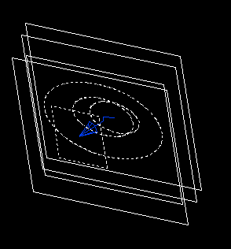

|
| Lofted Feature (Использование формообразующих сечений) |
|
Термин лофтинг (lofting) вошел в наш язык из старинной практики кораблестроения, когда при формировании корпуса судна последующие поперечные
сечения шпангоута как бы поднимались (lift off) по отношению к предыдущему поперечному сечению. Процесс лофтинга позволяет создавать тела с
меняющимися с расстоянием поперечными сечениями. Поэтому простейшее тело будет имет по крайней мере два или более поперечных сечения, которые могут
быть образмерены.
Используйте команду AMLOFT для создания сложной, твердотельной формы,
трансформируя ее через набор плоских петель или сечений.
Петли могут быть определены, используя:
- профили;
- замкнутые планарные поверхности;
- рабочие точки.

Браузер |
Нажатием правой клавиши мыши на иконке Профиль (Profile) окна браузера вызовите контекстное меню , где выберите пункт Loft. |

Кнопка инструментов
(Loft) |
 |
Меню |
Part -> Sketched Features -> Loft |
Команда |
AMLOFT |

OPERATION
Управляет, как элемент трансформирования будет использоваться.
Base. Создает элемент трансформирования, который становится базовым
элементом активной детали. Если базовый элемент уже существует, эта
операция недоступна. Если базовый элемент не существует, эта
операция является значением по умолчанию. Другие операции не
доступны.
Cut. Вырезает элемент трансформирования из базовых элементов.
Join. Присоединяет элемент трансформирования к базовому элементу.
Intersect. Создает новый элемент из общего объема между элементом
трансформирования и базовым элементом.
Split. Рассекает базовый элемент, используя элемент трансформирования.
TERMINATION
Управляет созданием элемента трансформирования.
Sections. Создает элемент трансформирования, используя
профилированные сечения.
To Face. Создает элемент трансформирования до существующей грани.
From To. Создает элемент трансформирования от одной до другой
существующей грани.
TYPE
Управляет типом элемента трансформирования.
Linear. Создает линейный переход между двумя указанными сечениями
или плоскостями.
Cubic. Создает постепенные переходы между указанными сечениями или
плоскостями.
Closed Cubic. Создает постепенные переходы между указанными
сечениями по замкнутой траектории.
SECTIONS TO LOFT
Содержит опции для переопределения, переупорядочивания и удаления сечений
и контролирования точек начала сечений для минимизации скручивания.
Redefine. Переопределяет сечения, используемые в элементе
трансформирования.
Reorder. Переупорядочивает выбранные сечения или грани.
Delete. Удаляет выбранные сечения или грани.
START SECTION
Управляет начальным сечением элемента трансформирования.
Tangent to Adjacent Faces. Заставляет элемент трансформирования
касаться смежных граней начальной поверхности; доступна только, если
начальным сечением элемента трансформирования является грань.
Angle. Управляет углом подъема начального сечения элемента
трансформирования; недоступна, если выбрана опция Tangent to Face.
Weight. Управляет, как долго элемент трансформирования следует
опции Angle или Tangent to Face перед началом перехода к следующему сечению.
END SECTION
Управляет конечным сечением элемента трансформирования.
Tangent to Adjacent Faces. Вынуждает элемент трансформирования
касаться смежной грани конечной плоскости; доступна только, если конечным
сечением элемента трансформирования является грань.
Angle. Управляет углом подъема конечного сечения элемента
трансформирования; недоступна, если выбрана опция Tangent to Face.
Weight. Управляет, как долго элемент трансформирования следует
опции Angle или Tangent to Face перед началом перехода к последнему сечению.
|
| Пример создания объёмного тела методом формообразующих сечений |
|
Шаг 1 |
Создаётся последовательный набор рабочих плоскостей, на которых будут рисоваться эскизы поперечных сечений.
Для получения изометрической проекции с клавиатуры вводится 8. |
Шаг 2 |
Создадим первую эскизную плоскость.
Вводим AMSKPLN.
Для активизации плоскости в качестве эскизной щелкаем мышью на первой рабочей плоскости. |
Шаг 3 |
Создаётся эскиз поперечного сечения (профиль) на рабочей/эскизной плоскости. |
Шаг 4
|
Идентифицируется поперечное сечение (профиль).
Введём AMPROFILE и проставим на профиле размерные ограничения. |
Шаг 5
|
Введём AMPARDIM и разместим размерное ограничение.
Для этого щёлкнем мышью сначала на профиле, а затем — в стороне от него. |
Шаг 6 |
Повторяются шаги со второго по четвертый для каждой рабочей плоскости: |
Шаг 7
|
Теперь все готово для выполнения лофтинга.
Введём AMLOFT: Select profiles or planar faces to loft: (Этим предлагается выбрать поперечные сечения).
Выбираем все поперечные сечения, начиная с первого. |
Примечание: В целях оптимизации ресурсов ЭВМ целесообразно использовать не рабочие плоскости, а эскизные.
Подсказка: если выполнение команды Loft не проходит, то попытайтесь снова, но сначала выберите опцию Start Points,
затем щелкните мышью на первом поперечном сечениии, после — на кнопке ОК.
|
| Способ устранения проблем лофтинга |
|
Если после лофтинга тело выглядит не так, как хотелось, то можно проделать несколько регулировок.
Иногда после выполнения лофтинга тело может выглядеть
скрученным. Это, в свою очередь, может означать, что стартовые точки были неправильно совмещены.
Чтобы устранить эту проблему, необходимо выполнить следующую процедуру.
В окне системного броузера щелкем правой кнопкой мыши на ветви Loft,
а затем в выпадающем меню выберем режим Edit.
Появляется диалоговое окно команды Loft.
Щелкнем мышью на кнопке Start Points.
Щелчком мыши устанавливаем на профиле поперечного сечения новые стартовые
точки так, чтобы пиктограммы стартовых точек совмещались с профилем.
Рассмотрим типы опций лофтинга:
- Linear (Линейный);
- Cubic (Кубический);
- Closed Cubic (Кубический замкнутый).
Внимание! Если используются только два профиля поперечного
сечения, то можно применить опцию Linear. Линейный лофтинг будет обеспечивать
прямой или линейный путь между профилями поперечных сечений.
Ребра в этом случае резкие, и нет никакого сглаживания перехода между
сечениями.
Опция Cubic позволяет выполнять лофтинг
сразу по нескольким поперечным сечениям.

При помощи опции Cubic можно
осуществлять лофтинг по нескольким профилям поперечного сечения. Возможно
использование нескольких профилей одного типа, но с разными размерами.
Можно также применять профили различной формы
Эта опция приводит к получению плавных сопряжений одного поперечного
сечения с другим. Критическими параметрами управления сопряжением являются
вес Weight и угол Angle,
задаваемые для каждого поперечного сечения.
Значение параметра Weight управляет тем,
на каком расстоянии от ребра профиля поперечного сечения начинается сопряжение.
Параметр Angle представляет собой угол между
плоскостью профиля поперечного сечения и боковой поверхностью в точке,
лежащей на профиле. Эти параметры задаются для начального Start
и конечного End сечений.
Опция Closed Cubic может применяться при
лофтинге, когда первое и последнее поперечные сечения совпадают. Используя
эту опцию, можно получать тела с уникальной формой. Ниже для создания
пластмассовой ручки были применены квадрат и два круга.
|
| Пример построения элемента линейного трансформирования |
|
|
| Пример построения элемента кубического трансформирования |
|
|